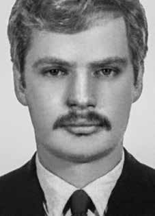

Frederico
Eduardo
Mayr
CIRCUNSTÂNCIAS DA MORTE
Frederico Eduardo Mayr foi preso e morto por agentes do Destacamento de Operações de Informações – Centro de Operações de Defesa Interna (DOI-CODI), em 24 de fevereiro de 1972. A versão oficial é de que Frederico teria sido morto em um tiroteio com agentes policiais na rua Pero Correia.
De acordo com esta versão, os “guerrilheiros”, que estavam em um fusca, teriam atirado contra os policiais mesmo sem nenhum motivo aparente. Neste momento, ao revidar os disparos feitos pelos militantes, Frederico teria sido morto. Contudo, nada é afirmado quanto aos demais ocupantes do veículo que sequer foram citados, seja como presos ou como foragidos.
A requisição de exame enviada pelo Departamento de Ordem Política e Social (DOPS) reforça a versão oficial ao apontar que, no dia 24, o corpo de Frederico teria entrado no Instituto Médico Legal (IML-SP), às 10h, após ser morto em um tiroteio com agentes da repressão na rua Pero Correia, no bairro Jardim da Glória. Tal documento estava registrado com o nome de Eugênio Magalhães Sardinha, mas na parte superior da página, em letras grandes, constava o nome verdadeiro e completo de Frederico.
Apesar do registro com nome falso, os agentes dos órgãos de repressão sabiam sua identidade desde o momento em que o prenderam. Isso se confirma nos documentos localizados no DOPS-SP, tais como sua ficha individual, que aponta seu verdadeiro nome e suas informações de qualificação, além da ficha datiloscópica e as fotos de frente e de perfil. Na ficha individual, feita em 24 de fevereiro, constam fotos de Frederico ainda vivo, e a indicação de que o local da prisão foi a avenida Paulista, ocorrida no dia anterior.
Apesar disso, seu óbito foi registrado com o nome falso, destacando que seu sepultamento como indigente ocorreu no Cemitério de Perus. O laudo necroscópico, assinado pelos legistas Isaac Abramovitc e Walter Sayeg, também reforça a falsa versão oficial e, de forma muita sucinta, aponta três tiros, dois deles indicando a direção de cima para baixo. Ao ser preso pelo DOI-CODI, Frederico foi baleado na altura do abdômen no dia 23 de fevereiro, na avenida Paulista.
Mesmo gravemente ferido, foi levado para a sede daquele órgão de repressão, local onde sofreu tortura. Frederico foi submetido a choques elétricos na chamada “cadeira do dragão”, além de torturado no “pau-de-arara” e de ter sofrido diversos espancamentos. Nesta ocasião, foi visto algumas vezes por outros presos. De acordo com a Comissão de Familiares de Desaparecidos Políticos, sua tortura foi conduzida por diversos agentes policiais, entre eles os investigadores do DOPS, Lourival Gaeta e Aderbal Monteiro, os policiais conhecidos apenas como “Oberdan” (investigador da Polícia Federal) e “Caio” da Polícia Civil de São Paulo, todos comandados pelo Major do Exército Carlos Alberto Brilhante Ustra, que tentou propor a Frederico a troca de informações por sua vida.
A foto de seu corpo, localizada no arquivo do DOPS-SP, mostra o rosto e dorso de Frederico, deixando claro que, por apresentá-lo mais magro e desfigurado, não poderia ter sido tirada apenas alguns instantes após aquela produzida e apresentada na identificação. A Comissão Estadual da Verdade de São Paulo realizou audiência pública sobre o caso em 21 de agosto de 2013. Nesta ocasião, Darci Toshiro Miyaki, ex-militante da Ação Libertadora Nacional (ALN) afirmou que viu Frederico no DOI-CODI, pela primeira vez, sentado e todo ensanguentado. Posteriormente, observou o momento em que ele saiu da sala de tortura e levado para a cela número 1.
Seus restos mortais foram sepultados na vala clandestina do Cemitério de Perus. Somente em 1992, após a abertura da referida vala, sua ossada foi identificada pelo Departamento de Medicina Legal da Universidade Estadual de Campinas (Unicamp). Em 13 de julho do mesmo ano, foi celebrada por Dom Paulo Evaristo Arns uma missa na Catedral da Sé, em São Paulo, em sua homenagem e a Helber José Gomes Goulart e Emanuel Bezerra dos Santos, outros dois militantes que tiveram seus restos mortais localizados.
O corpo de Frederico Eduardo Mayr foi trasladado para o Rio de Janeiro para ser enterrado no jazigo da família no Cemitério dos Ingleses.
Frederico Eduardo Mayr was arrested and killed by agents from the Information Operations Detachment – Internal Defense Operations Center (DOI-CODI), on February 24, 1972. The official version is that Frederico was killed in a shootout with police agents on Pero Correia Street.
According to this version, the “guerrillas”, who were in a Beetle, would have shot at the police even for no apparent reason. At this moment, when he returned fire at the militants, Frederico was reportedly killed. However, nothing is stated regarding the other occupants of the vehicle who were not even mentioned, either as prisoners or as fugitives.
The examination request sent by the Department of Political and Social Order (DOPS) reinforces the official version by pointing out that, on the 24th, Frederico's body would have entered the Legal Medical Institute (IML-SP), at 10 am, after being killed in a shootout with repression agents on Rua Pero Correia, in the Jardim da Glória neighborhood. This document was registered with the name of Eugênio Magalhães Sardinha, but at the top of the page, in large letters, Frederico's real and full name appeared.
Despite registering under a false name, law enforcement agents knew his identity from the moment they arrested him. This is confirmed in the documents located at DOPS-SP, such as your individual file, which indicates your real name and qualification information, in addition to the fingerprint file and front and profile photos. The individual file, made on February 24, contains photos of Frederico still alive, and the indication that the location of the arrest was Avenida Paulista, which occurred the day before.
Despite this, his death was registered under a false name, highlighting that his burial as a pauper took place in the Perus Cemetery. The autopsy report, signed by coroners Isaac Abramovitc and Walter Sayeg, also reinforces the false official version and, very succinctly, points out three shots, two of them indicating the direction from top to bottom. Upon being arrested by DOI-CODI, Frederico was shot in the abdomen on February 23, on Avenida Paulista.
Even though he was seriously injured, he was taken to the headquarters of that repressive body, where he suffered torture. Frederico was subjected to electric shocks in the so-called “dragon chair”, in addition to being tortured in the “pau-de-arara” and suffering several beatings. On this occasion, he was seen a few times by other prisoners. According to the Commission of Relatives of Political Disappearances, his torture was carried out by several police agents, including DOPS investigators Lourival Gaeta and Aderbal Monteiro, police officers known only as “Oberdan” (Federal Police investigator) and “Caio” from the São Paulo Civil Police, all commanded by Army Major Carlos Alberto Brilhante Ustra, who tried to propose to Frederico the exchange of information for his life.
The photo of his body, located in the DOPS-SP archive, shows Frederico's face and back, making it clear that, as he appears thinner and more disfigured, it could not have been taken just a few moments after the one produced and presented in the identification. The São Paulo State Truth Commission held a public hearing on the case on August 21, 2013. On this occasion, Darci Toshiro Miyaki, a former militant of Ação Libertadora Nacional (ALN) stated that he saw Frederico at DOI-CODI, for the first time, sitting and covered in blood. Later, he observed the moment he left the torture room and was taken to cell number 1.
His remains were buried in a clandestine grave in the Perus Cemetery. Only in 1992, after the opening of the aforementioned grave, his bones were identified by the Department of Legal Medicine of the State University of Campinas (Unicamp). On July 13 of the same year, a mass was celebrated by Dom Paulo Evaristo Arns at the Sé Cathedral, in São Paulo, in his honor and in honor of Helber José Gomes Goulart and Emanuel Bezerra dos Santos, two other militants whose remains were located.
Frederico Eduardo Mayr's body was transferred to Rio de Janeiro to be buried in the family tomb at the Ingleses Cemetery.
Frederico Eduardo Mayr fue detenido y asesinado por agentes del Destacamento de Operaciones de Información – Centro de Operaciones de Defensa Interna (DOI-CODI), el 24 de febrero de 1972. La versión oficial es que Frederico murió en un tiroteo con agentes policiales en la calle Pero Correia.
Según esta versión, los “guerrilleros”, que se encontraban en un Escarabajo, habrían disparado contra los policías incluso sin motivo aparente. En ese momento, cuando respondió al fuego contra los militantes, Frederico habría muerto. Sin embargo, nada se dice sobre los demás ocupantes del vehículo que ni siquiera fueron mencionados, ni como prisioneros ni como prófugos.
La solicitud de examen enviada por el Departamento de Orden Político y Social (DOPS) refuerza la versión oficial al señalar que, el día 24, el cuerpo de Frederico habría ingresado al Instituto Médico Legal (IML-SP), a las 10 horas, después de haber sido asesinado en un tiroteo con agentes de represión en la Rua Pero Correia, en el barrio Jardim da Glória. Este documento fue registrado con el nombre de Eugênio Magalhães Sardinha, pero en la parte superior de la página, en letras grandes, aparecía el nombre real y completo de Frederico.
A pesar de registrarse con un nombre falso, los agentes del orden supieron su identidad desde el momento en que lo arrestaron. Esto se confirma en los documentos ubicados en el DOPS-SP, como su expediente individual, que indica su nombre real y datos de calificación, además del expediente de huellas dactilares y fotografías de frente y de perfil. El expediente individual, realizado el 24 de febrero, contiene fotografías de Federico aún con vida, y el indicio de que el lugar de la detención fue la Avenida Paulista, ocurrida el día anterior.
Pese a ello, su muerte fue registrada con un nombre falso, destacando que su entierro como indigente se llevó a cabo en el Cementerio de Perus. El informe de la autopsia, firmado por los forenses Isaac Abramovitc y Walter Sayeg, también refuerza la falsa versión oficial y, de manera muy sucinta, señala tres disparos, dos de ellos indicando la dirección de arriba a abajo. Al ser detenido por el DOI-CODI, Frederico recibió un disparo en el abdomen el 23 de febrero, en la Avenida Paulista.
Aunque resultó gravemente herido, fue trasladado a la sede de ese organismo represivo, donde sufrió torturas. Frederico fue sometido a descargas eléctricas en la llamada “silla del dragón”, además de ser torturado en el “pau-de-arara” y sufrir varias golpizas. En esta ocasión, otros presos lo vieron varias veces. Según la Comisión de Familiares de Desapariciones Políticas, su tortura fue realizada por varios agentes policiales, entre ellos los investigadores del DOPS Lourival Gaeta y Aderbal Monteiro, policías conocidos sólo como “Oberdan” (investigador de la Policía Federal) y “Caio” de la Policía Civil de São Paulo, todos comandados por el Mayor del Ejército Carlos Alberto Brilhante Ustra, quien intentó proponerle a Frederico el intercambio de información sobre su vida.
La foto de su cuerpo, ubicada en el archivo del DOPS-SP, muestra el rostro y la espalda de Frederico, dejando claro que, al aparecer más delgado y desfigurado, no pudo haber sido tomada apenas unos momentos después de la producida y presentada en la identificación. La Comisión de la Verdad del Estado de São Paulo celebró una audiencia pública sobre el caso el 21 de agosto de 2013. En esta ocasión, Darci Toshiro Miyaki, ex militante de la Asociación Libertadora Nacional (ALN), afirmó haber visto a Frederico en el DOI-CODI, por primera vez, sentado y cubierto de sangre. Posteriormente, observó el momento en que salió de la sala de torturas y fue conducido a la celda número 1.
Sus restos fueron enterrados en una fosa clandestina en el Cementerio de Perus. Recién en 1992, tras la apertura de la mencionada fosa, sus huesos fueron identificados por el Departamento de Medicina Legal de la Universidad Estadual de Campinas (Unicamp). El 13 de julio del mismo año, Dom Paulo Evaristo Arns celebró una misa en la Catedral de la Sé, en São Paulo, en su honor y en honor de Helber José Gomes Goulart y Emanuel Bezerra dos Santos, otros dos militantes cuyos restos fueron localizados.
El cuerpo de Frederico Eduardo Mayr fue trasladado a Río de Janeiro para ser enterrado en la tumba familiar en el Cementerio de los Ingleses.